TweakIt for Microsoft Azure Portal
Appearance
Notifications
Resource Operations
Cloud Shell
Basic features
Replace favicon to Azure resource's icon
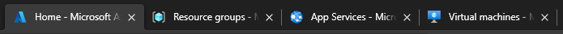
Experimental features
Decorate resource group list
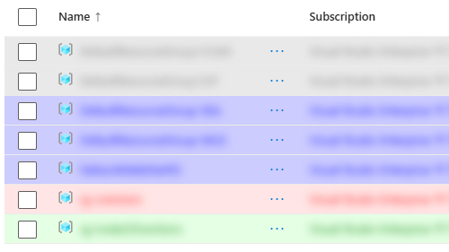
Basic features
Blink favicon during configuration
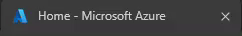
Notify to desktop when finishing configuration
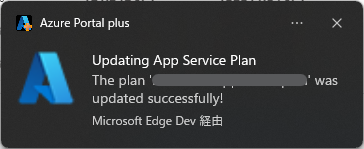
Experimental features
Bring the window to the front when finishing configuration
Basic features
Copy resource information
Resource name
Resource Id
Resource name and group as Azure CLI option
Resource name and group as Azure PowerShell option
ARM template (JSON)
ARM template (Bicep)
Terraform (AzApi)
Terraform (AzureRM)
VM and Bastion Ids as `az network bastion` option(*)
* Only for Azure Virtual Machines
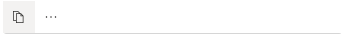
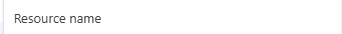
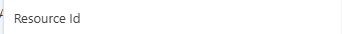
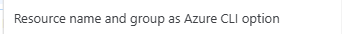
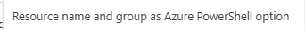
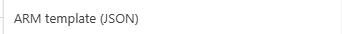
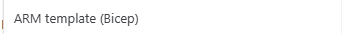
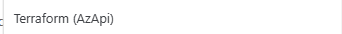
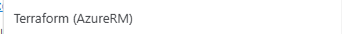
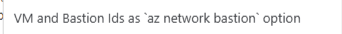
Experimental features
Restore filter string on each list view
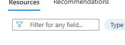
Basic features
Keep Cloud Shell session alive more than 20 minutes
Experimental features
Custom startup script (bash only)
Show executed command
Record executed command
Open `insiders.vscode.dev` by `code` command (bash only)